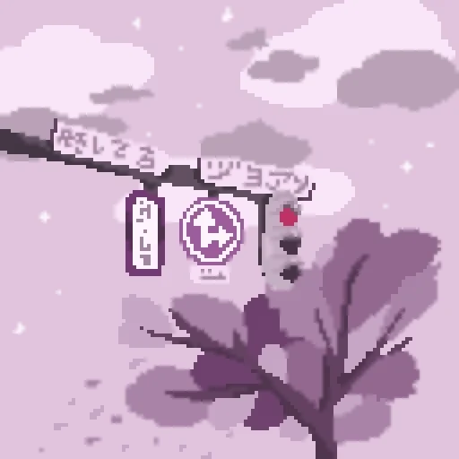

-
Фритрек и нулевой спринт: Подготовка к работе
</HTML>
.webp)
Это было самое начало пути. На этом этапе важно было проникнуться основами и настроиться на учёбу. И, возможно, подумать, как новые знания могут повлиять на ваше будущее.
Здесь я решил, что что-то нужно менять и учиться чему то новому. Решил попробовать потыкаться в фронт, потому что бэк слишком сложно, а ещё хотелось пить Лавандовый раф.
-
1 спринт: Я — чистый лист
<CHOISE>
.webp)
На первых этапах мы работали со страхами и сомнениями, которые часто испытывают новички. Один из них — страх перед чистым листом. Это, конечно же, намного сложнее, чем боязнь куска бумаги. Часто за этим ощущением скрываются более глубокие вопросы: с чего начать? а вдруг будет слишком сложно? что, если я не справлюсь?
Здесь я уже начал полноценно учиться чему либо, благодаря своим добрым добрякам, которые меня поддержали и сказали, что у меня всё получиться и я тоже стану крутышом! Спасибо им!
-
1 спринт: А если не получится?
<CSS>
.webp)
Первый проект — позади! Но это всё ещё самое начало пути. Радость могла быстро померкнуть и смениться ожиданием провала. Или вы, наоборот, могли вдохновиться успехами и поверить в себя.
Я написал свой первый проектик, покрасил кнопочки и начал с чем то знакомиться.
-
2 спринт: Погоня за идеалом
<desigions>
На этом этапе вы уже достаточно разбирались в основах вёрстки, чтобы понять, как много ещё впереди. Вы могли попытаться погнаться за идеалом и понять, что он недостижим. А, может, вы вовсе и не подвержены перфекционизму и вместо того, чтобы сделать идеально, старались просто сделать.
Где то тут я подумал, что вёрстка не так уж и сложно, но новую информацибю постоянно потреблять и перерабатывать сложновато.
-
2 спринт: О тех, кто рядом
<position: absolute;>
.webp)
Всё это время вы были не одиноки (хотя, возможно, иногда и чувствовали, что одни против целого мира). Вас окружали одногруппники, команда сопровождения и просто близкие люди, которым можно пожаловаться, если очередной макет просто так не поддавался. Осваивать что-то новое легче, когда рядом есть единомышленники, не правда ли?
Примерно в этот момент у меня появились единомышленники знакомые, которые могли мне что-то подсказать и объяснить, учиться стало комфортнее.
-
3 спринт: Обходные стратегии
<support>
.webp)
На этом курсе вы постоянно решали разные задачи. В какой-то момент вам могло показаться, что решения просто иссякли. Значит, пришло время посмотреть на задачу под другим углом.
Вроде как всё было достаточно стабильно, я просто продолжал делать.
-
3 спринт: Когда опускаются руки
<lifes-style: none;>
.webp)
Во время учёбы часто возникает чувство, когда не знаешь, за что хвататься. Вроде и проектную пора сдавать, и задачи хочется порешать, и в теории получше разобраться, и жизнь не забыть пожить. В такие моменты очень нужна концентрация. Вспомните, откуда вы её черпали.
Как и написанно выше, что стало посложнее, информации стало больше, проекты сложнее, одни знания накладывались на другие и надо было всё держать в голове и запоминать новое. Но зато я начал понимать то что я уже что-то умею и прошёл какой то путь!
-
«Сейчас я здесь»
</experience>
.webp)
Сейчас вы уже очень много знаете о вёрстке. Но это только начало. Во-первых, впереди ещё много материала про «красотищу». Во-вторых, с окончанием курса учёба не заканчивается. Вёрстка — это целый мир. И этот мир постоянно меняется. Познать его полностью не получится, но это тот случай, когда важен сам процесс познания. Ведь часто путь — и есть результат.
Предстоит ещё очень многое выучить и узнать, при этом всём ещё в более ускоренных темпах и ещё более массивным количеством ифнформации. Эти трудности так и возможности, которые мне дают люди, чтобы стать крутышом в дальнейшем. Спасибо им! Думаю, что чувства перемен в моей жизни ещё не было так много как сейчас. Спасибо всем добрякам которые меня поддерживают! <3